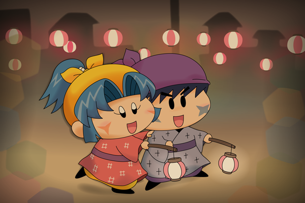

ヤマネ「サスケ先輩！
あちらで一緒に星を見るでございます！」
サスケ「おうだぜ～。
でも屋台で綿あめを買ってからにしたいんだぜ」
ヤマネ「私の方が先に言ったのだから、
綿あめよりも星の方が先でございますっ」
サスケ「わ、わかったぜ・・・（ヤマネは強情・・）」
今回は気分を変えて、フィクションな絵を描いてみました。舞台は昭和初期――ある夏祭りの夜の出来事・・・という謎設定です。最近、とある文献でこの時代の子供たちの生活っぷりを読んだのですが、とても健気で温かくて。そして着物を着てはしゃぎまわる光景もかわいくて。
せっかくフィクションを描くのだから、サスヤマ（ヤマネの方が積極的だからヤマサス？）という実ることのない組み合わせで。夏祭りの夜だけに限らず、毎日一緒に川へ魚を捕りに行ったり、一緒に本を読んだりと、いろんな光景もセットで妄想してます(^◇^;)。
絵の方は、夏の湿気と薄暗さを表すために、ぼかしを使いまくり・・・Illustratorで機能を多用するとPCが重くなってすごく大変でした。
(2014/5/7)